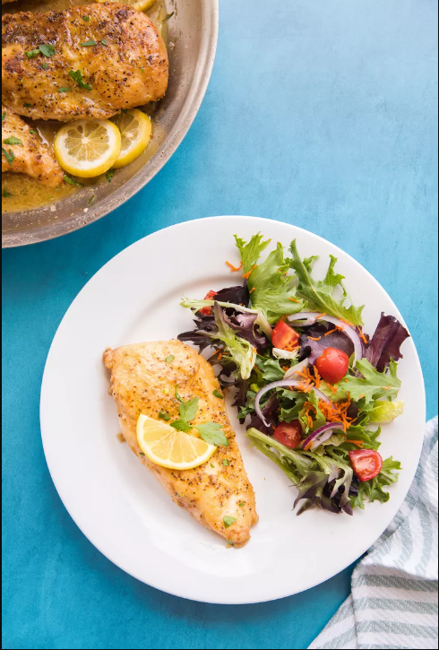
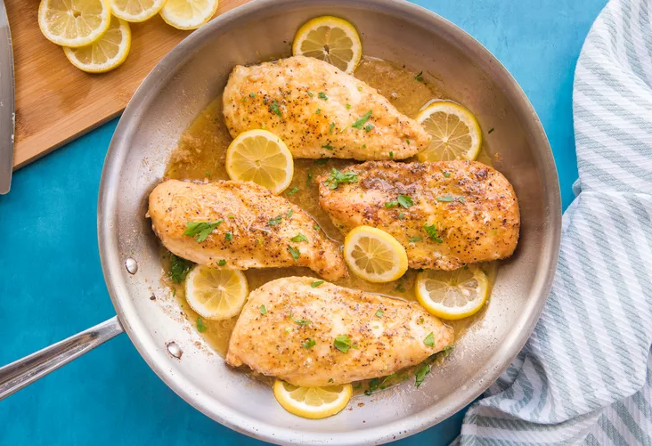

Lemon Pepper

Lemon pepper is a combination of black peppercorns and dried lemon zest. It’s readily available in jars at most supermarkets and may contain small amounts of other ingredients like garlic or onion powder and salt. The combination of spicy peppercorns and zesty citrus adds delicious flavor to chicken.
I
- Seasoning the chicken before dredging it in the flour helps the lemon pepper adhere to the meat better.
- Allowing the flour dredge to dry out slightly will give your chicken breast a bit more texture. After dredging the chicken breasts in the flour, lay them on a cooling rack or platter while the butter and oil heat up. Even that short amount of time will give the flour a chance to adhere to the chicken better than if you went directly from the flour plate to the pan.
- If you have heartier eaters, skip slicing the chicken in half and leave each breast whole. Increase the cooking time by 3 to 4 minutes per side and consider doubling the recipe.

Bake It Instead
These lemon pepper chicken breasts are pan-fried which gives them good color and texture. If you are looking to cut a few calories you can certainly bake them.
- Omit the flour and lightly brush each breast with olive oil on both sides. Place the chicken onto a sheet pan in a single layer.
- Sprinkle the lemon pepper seasoning and salt over the chicken on both sides.
- Bake the chicken in a preheated 425°F oven for 15 to 18 minutes, turning once halfway.
- Prepare the lemon pepper sauce on the stove top as instructed and add the baked chicken breast to the skillet to coat in the sauce.

Easy Ingredient Swaps
- Swap the all-purpose flour with a gluten-free flour blend to make this recipe gluten-free.
- Add 1/4 teaspoon of crushed red pepper flakes or cayenne pepper to the lemon pepper seasoning to make spicy lemon pepper chicken.
- Replace the chicken with turkey cutlets.
- Cilantro or sage are great replacements for the parsley in this recipe. Use the same amount of either herb in its place.
- Vegetable stock can be used in lieu of chicken stock.
Make It Ahead
If you’re a meal prepper, pan-fry the chicken and prepare the lemon pepper pan sauce as instructed. Instead of returning the chicken breast to the sauce to coat it, divide the sauce equally into your food storage containers and pack it in with the cooked chicken breast. Lemon pepper chicken breasts will keep for up to 4 days in the fridge.
